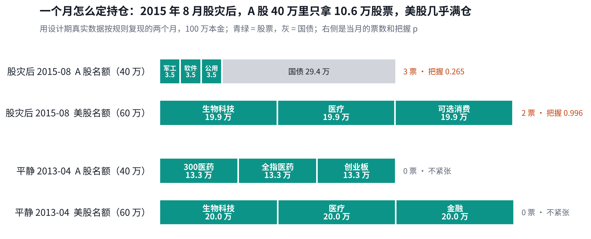
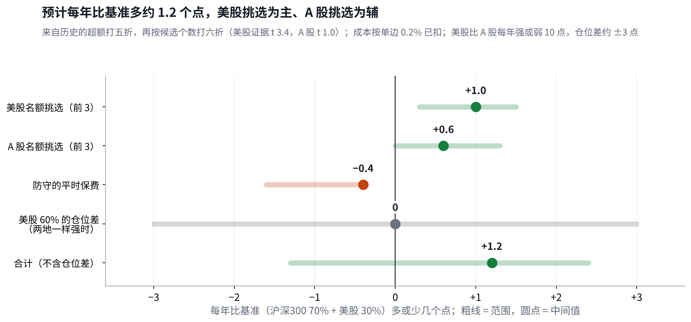
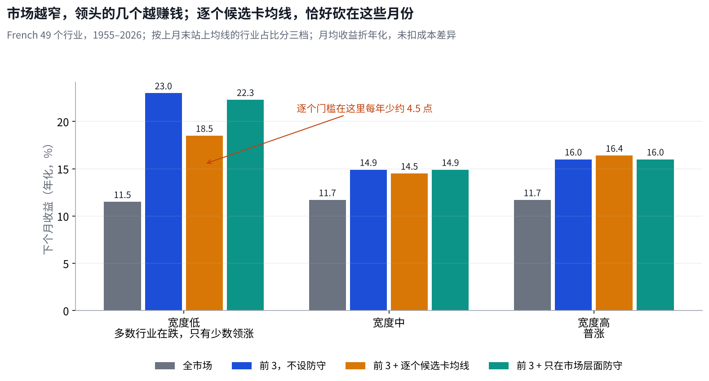
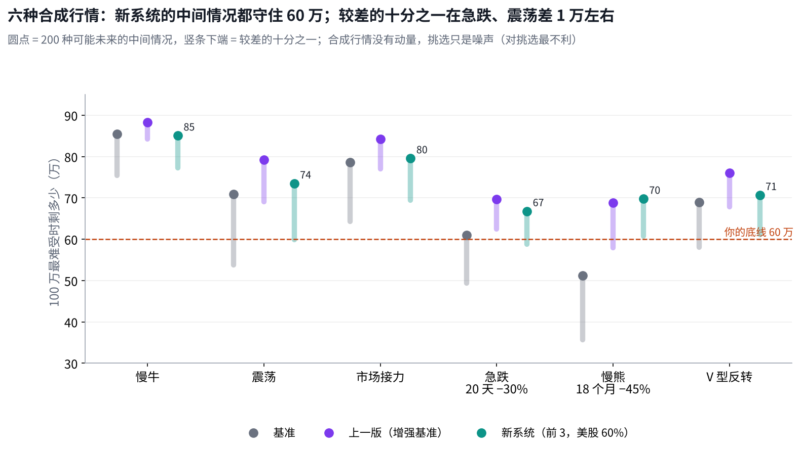

v6 预演预测表
每个市场选最强的 3 个，紧张时按把握减仓；预计每年比基准多约 1.2 个点，100 万最差约剩 67 万
项目愿景 在动态周期内，从多类资产里选出 Top N 强势 ETF 轮动持有，获得超额收益、稳定跑赢被动基准，同时把回撤控制住。
00策略怎么执行：每月最后一个交易日走四步，下一个交易日调仓
100 万分成 A 股 40 万、美股 60 万，各自走四步；平时每边拿 3 只、各占三分之一，市场确认紧张时股票只拿“把握 p”那么多，其余买国债。

怎么读t 越大越有把握：t = 0 时 p = 0.5，t = 1 时 0.84，t = 2 时 0.98；不足 12 个月时 p = 0.5。
- 读这张图：2015 年 8 月股灾后，A 股三票全中，以往紧张时 A 股领头者也跟着跌，把握只有 0.235，40 万里只拿 9.4 万股票；美股也算紧张，但美股领头者以往紧张时照样涨，把握 0.997，几乎满仓。
- 一条附加规则：母指数跌破均线时，只选过去一年是涨的候选，选不满的空位也放国债。
- 去重已测通过：2013 年 4 月 A 股前两名“300 医药”和“全指医药”是同一个行业；同一行业只留分数最高的一个后，改选 300 医药、创业板、全指公用。去重让单一行业占名额三分之二以上的月份从约两成降到 3%（D38 第 46 行）。
| 执行标准 | 怎么算 | 用在哪一步 | 数字从哪来 |
|---|---|---|---|
| 12−1 涨幅 | 上月末点位 ÷ 12 个月前月末点位 − 1；全收益口径，美股按人民币 | 打分、选人 | 文献默认值 |
| 10 个月均线 | 最近 10 个月末点位的平均（含本月末） | 母指数、国债是否跌破 | 文献默认值 |
| 宽度 | 站上自己均线的候选数 ÷ 有 10 个月数据的候选数 | 第二票 | 门槛 = 到当时为止全部月份的 1/3 分位 |
| TRIN（10 日均值） | 每天：（涨的候选数 ÷ 跌的候选数）÷（涨的成交额 ÷ 跌的成交额），取最近 10 天平均 | 第三票 | 门槛 = 到当时为止的 2/3 分位 |
| 确认紧张 | 三票里至少两票 | 定仓位 | 等权投票，事先写死 |
| 把握 p | 以往每个紧张月记下“当时前 3 名下个月的平均涨幅”；p = Φ(平均 ÷ 标准差 × √月数) | 定仓位 | 只用已知结果；不足 12 个月份时 p = 0.5 |
| 候选准入 | 指数官方发布日（或基金上市日）起满 12 个月 | 打分 | D38 第 39 行教训 |
| 溢价偏离 | 当日溢价 − 最近 60 个交易日溢价的中位数 | 买基金 | 执行层规则，不计入 3 个数字 |
| 成本 | 回测按单边 0.2% 计 | 全部 | 上限口径 |
- 把握 p 怎么读：t = 平均 ÷ 标准差 × √月数，越大越有把握。t = 0 时 p = 0.5，t = 1 时 0.84，t = 2 时 0.98。
- 美股候选：设计期回测用美国本土的行业 ETF 加纳指、道指、费城半导体、纳斯达克生物科技代替；v6 实盘用对应的 QDII，清单等 Grok 第六轮补齐后定。
| 示例：2015 年 8 月 31 日（A 股刚经历股灾） | A 股名额（40 万） | 美股名额（60 万） |
|---|---|---|
| ① 打分前 3（去重后） | 中证军工 106%、全指软件 100%、全指公用 95% | 纳斯达克生物科技 37%、可选消费 16%、纳指100 12%（医疗 19% 与生物科技同属医疗保健，让位） |
| ② 母指数和均线 | 沪深300 低于均线约 12%：只选分数为正的，前 3 都为正 | 标普500 低于均线约 0.7%：同左 |
| ② 三票 | 均线 ✓；宽度 0.00（门槛 0.35）✓；TRIN 1.25（门槛 1.20）✓：3 票 | 均线 ✓；宽度 0.43（门槛 0.62）✓；TRIN 1.25（门槛 1.92）✗：2 票 |
| ④ 把握 p | 0.235（之前 37 个紧张月，领头者表现差） | 0.997（含美国长历史 156 个紧张月） |
| ④ 股票仓位 | 40 万 × 0.235 = 9.4 万，每只 3.1 万 | 60 万 × 0.997 = 59.8 万，每只 19.9 万 |
| ④ 其余 | 30.6 万买 10 年国债（国债在均线上方） | 0.2 万买国债 |
| 示例：2013 年 4 月 26 日（平静月份） | A 股名额（40 万） | 美股名额（60 万） |
|---|---|---|
| ① 打分前 3（去重后） | 沪深300医药卫生 37%、创业板 27%、全指公用 10%（全指医药 34% 与 300 医药同属医药卫生，让位） | 纳斯达克生物科技 27%、金融 17%、必需消费 16%（医疗 22% 让位） |
| ② 三票 | 母指数在均线上方；宽度 0.74；TRIN 历史不足 24 个月不投票：0 票 | 0 票 |
| ④ 仓位 | 每只 13.3 万，股票 40 万 | 每只 20 万，股票 60 万 |
- 脚本：
scripts/preflight/exec_example.py - 结果：
results/v6-preflight/exec-example.json
01预测表：每年比基准多约 1.2 个点，美股挑选为主、A 股挑选为辅
美股名额挑选打折后每年约 +1.0；A 股名额约 +0.6；防守的平时保费约 −0.4；合计约 +1.2。

| 来源 | 中间值 | 范围 | 怎么算的 | 证据强度 |
|---|---|---|---|---|
| 美股名额挑选（前 3） | +1.0 | +0.3 到 +1.5 | 美国 70 年前 3 每年比全市场多 5.6，打五折，再按候选个数打六折，乘美股 60% | 强（t 3.4） |
| A 股名额挑选（前 3） | +0.6 | 0 到 +1.3 | A 股 10 个一级行业 2006–2015 前 3 每年比沪深300 多 5.3，打五折、打六折，乘 40%；其中挑选只占 +0.7，其余是等权倾斜（第 51 行）；D40-12 维持 | 弱（t 1.0，挑选部分 t 0.2） |
| 防守的平时保费 | −0.4 | −1.6 到 −0.4 | 美国 70 年按把握调节对不设防守少 0.4；合成慢牛（最不利）少 1.6 | 中 |
| 美股 60% 的仓位差 | 0 | −3 到 +3 | 两地一样强时为 0；美股每年比 A 股强或弱 10 点，约 ±3 | 无法预测 |
| 合计（不含仓位差） | +1.2 | −1.3 到 +2.4 | 100 万十年约多 24 万 | 弱到中 |
- 超额有两个来源：美股名额挑选有 70 年证据（t 3.4），是主力；A 股名额 10 年证据（t 1.0），方向和美股一致，但六次里有一次可能是运气，所以范围下限写到 0。
- A 股的挑选：平均为零，但分阶段差别极大：等权全拿就比沪深300 多约 4.5；含主题的候选池里，12−1 在 2011–13 年结构市每年再多 16.9（t 2.2），在 2014–15 年轮动和崩盘时每年少 21.1，平均抵消。美股挑选 +5.7（t 3.2）不变（D38 第 51、53 行）。
- A 股这一项维持 +0.6，事后分两块对账（D40-12）：挑选约 +0.1（范围 −0.5 到 +0.5），等权倾斜约 +0.5（范围 −1.0 到 +1.0，主要是少配金融、偏中小盘）。v6 体检报告和一次性检验报告按这两块分别核对，赢了输了都看得清是哪一块。
- 反应式处理也没过：快速出场（落后于同伴就卖）每年出场约 24 次，被卖的一半以上随后反弹，比现规则每年少约 5 点，和 v2 一样躲崩盘、踏空反弹；“结构市才挑选”略好但只赢两个阶段，机制也不对（D38 第 54 行）。
- 真正的回报在大跌时：预期超额不大，主要换来的是回撤，100 万最差约剩 67 万，基准约 35–51 万。
02挑选有没有用：美国 70 年每月选最强的 3 个行业，每年比全市场多约 5 个点
前 3 名只有一半的月份跑赢平均，但跑赢时赢得多；只要抓到理论最大值的 5% 就够每年多 5 个点。

| 检验 | 结果 | 结论 |
|---|---|---|
| 前 3 扣成本后比平均，1927–1999 / 2000–2026 / 2016–2026 | +5.5 / +4.8 / +4.8 点，每段都赢 | 成立 |
| 每月跑赢平均的比例 | 46%–56% | 赢靠幅度，不靠次数 |
| 抓到理论最大值的几成 | 约 5% | 用不着 80% |
| 候选 10 / 15 / 25 / 43 个（2000–2026，前 3） | +1.0 / +1.7 / +2.4 / +2.9 点 | 候选越多越好 |
| 港股只有 4 个分类指数 | 所有挑选都跑输恒指 | 不成立候选太少 |
| A 股按发布日校正，2011–2015 | 前 2 年化 5.2%，沪深300 5.9% | 输 |
| 回看速度（美国 1955–2026，前 3，比全市场） | 12−1 +5.6；6−1 +0.05；随市场状态换速度 +3.3 点 | 12−1 最好 |
| 12−1 在四种市场状态下（美国） | 牛 +5.8、回调 +8.5、熊 +11.7、反弹 +12.9 点 | 都成立 |
| A 股 2011–2015 换速度（52 个月，含主题，比沪深300） | 12−1 +5.5；6−1 −6.0；上月涨幅 +21.2 点（t 2.13） | 线索，待验证 |
| 候选去重（设计期整套，美股 22 个候选） | 不去重 12.6% / 最低剩 62.6 万；去重 12.5% / 69.7 万 | 去重列入 v6 |
| 不追加已有行业的变体（美股旧 14 个 + REIT，去重） | 13.3% / 最低剩 72.3 万 | 列入 v6（D40-11） |
- 它预测的是延续，不是下个月：过去一年强的，平均来说接下来还会再强一些；具体哪个月谁第一，预测不了。
- 整体排序的准确度会骗人：美国行业的秩相关近十年只有 0.01，但前 3 名照样每年多 4.8 点。挑选层要量“前 N 比平均多多少”，不量整体排序（D38 第 20 行替换了尺子）。
| A 股一级行业：怎么选（扣成本后每年比沪深300 多几个点；最后一行只有 2012-08 起的 40 个月） | 2006–2011.7（回填段） | 2011.8–2015 | 全段 119 个月 | t | 每年换手 | 结论 |
|---|---|---|---|---|---|---|
| 12−1（12 个月前到 1 个月前，现规则） | +5.1 | +5.4 | +5.3 | 1.0 | 5 倍 | 采用 |
| 上个月涨幅（只看最近 1 个月） | +7.0 | +5.8 | +6.5 | 1.7 | 15.6 倍 | 不改 |
| 6−1（6 个月前到 1 个月前） | −1.5 | −4.6 | −2.9 | −0.6 | 7.2 倍 | 不改 |
| 12−1 ÷ 波动（风险调整） | +5.1 | +4.9 | +5.1 | 1.1 | 5.1 倍 | 与 12−1 几乎一样 |
| 12−1，成交额过热的不选 | — | +1.3（同期 12−1 +7.6） | — | 0.1 | 6.5 倍 | 不改 |
| 不挑选：10 个行业等权持有 | +4.9 | +4.3 | +4.6 | 1.2 | 约 0 | 12−1 只比它多 0.7 |
- 连续性版和 12−1 一起写进预注册（D38 第 55 行、D40-13）：在 12−1 前一半里，选上涨日最多、下跌日最少的 3 个（Da 等 2014 年的信息离散度）。一次性检验里 12−1 是主规则，连续性版是挑战者。
- 连续性版在两个池子里方向相反：一级行业 2006–2015 每年比等权多 3.2（t 1.04，12−1 是 +1.2），五个阶段赢四个；官方主题池 2011–2015 比 12−1 少 0.7（2011–13 少 10.9、2014–15 多 12.1），没过判据。
- 个股的规律到了行业上常常反过来：行业层面动量藏在盘中、不在隔夜，和个股文献相反；成交量、彩票偏好也是这样。A 股选人累计试了约 12 种，按停止规则 v6 不再加新变体（第 55 行）。
- 加候选要加“不同的押注”：第六轮新加的 8 个美股候选里 6 个是已有行业的变体，不去重时最低剩从 71 万掉到 63 万。去重已列入 v6；按 D40-11 不追加变体，只加 REIT（13.3%、72.3 万，第 46、47 行）。
- 12−1 不改：回看速度跟着市场状态变（牛熊用 12−1，回调、反弹改用快一些的信号），美国 70 年每年反而少 2.3 点；12−1 的超额在牛、回调、熊、反弹四种状态里都为正（D38 第 42 行）。
- A 股试了 4 种替代，12−1 都没被推翻：快、慢、去噪声、加刹车都不如 12−1，过拟合概率 0.83。根因不在算子：A 股行业之间的差异和美国一样大，但市场波动是美国的 2 倍多，按每年 5 点的超额要约 37 年才证得到 t ≥ 2（第 49、50 行）。
03防守放在哪：逐个候选卡均线会吃掉进攻，只在市场层面防守几乎不吃
市场越窄，领头的几个越赚钱（下个月年化 23%）；逐个卡均线正好在这些月份每年少约 4.5 点。

| 防守怎么放 | 年化 | 100 万最差剩 | 2016–2026 年化 | 结论 |
|---|---|---|---|---|
| 不设防守 | 16.6% | 34 万 | 17.5% | 收益最高、回撤最深 |
| 逐个候选卡均线 | 15.2% | 46 万 | 12.2% | 不采用吃进攻 |
| 按票直接砍股票仓位 | 11.9% | 70 万 | 3.5% | 不采用2022 年把能源领头者换成了国库券 |
| 按把握调节（v6） | 16.2% | 46 万 | 17.4% | 采用 |
| 一直持有全市场 | 11.0% | 50 万 | 14.8% | 参照 |
- 根因：市场信号预测的是母指数的风险，而组合拿的是领头者。紧张时领头者跟不跟着跌，因市场而异。
- 美国：紧张时领头者平均仍在涨（年化 +15%，t = 2.5），把握接近 1，几乎不减仓。
- A 股：按发布日校正前后结论翻转，把握从 0.5 起学；2008 年那种崩盘里会很快降下来。
04市场信息怎么用：宽度、TRIN 预测的是风险，不是方向
宽度低时下个月大跌的概率是 18%，宽度高时 5%；TRIN 和宽度几乎不相关，是两个独立的“传感器”。
| 指标 | 样本 | 下个月母指数跌超 5% 的概率 | 和宽度的相关 | 结论 |
|---|---|---|---|---|
| 宽度（站上均线的候选占比） | 美国 49 行业 1927–2026 | 低档 18%，高档 5% | — | 成立 |
| TRIN 10 日均值 | A 股 2006–2015（临时） | 高档 40%，低档 13% | −0.17 | 成立 |
| TRIN 月度原值 | 美股 1999–2015 | 高档 19%，低档 5% | 0.05 | 成立 |
| 上涨日成交额占比 | 两地 | — | 0.66–0.82 | 和宽度重复，不采用 |
| 成交额热度 | A 股 | 方向不稳 | — | 待定 |
- 单独当开关会出错：TRIN 当“一票否决”时，2008 年熊市中段的反弹月漏掉了防守，最差剩 53 万（D38 第 31 行），只说明这种用法不行。
- 三票合起来、按把握调节：两票以上才算紧张；紧张时减多少，由这个市场过去的经验决定。
05六种合成行情：慢牛保费 1.6 个点，中间情况都守住 60 万
慢牛每年落后基准约 1.6 点，低于你定的 4 点上限；最低剩的中间情况 67–85 万，较差的十分之一在急跌（58.8）、震荡（59.9）略低于 60 万。

| 行情 | 新系统最低剩：中间 / 较差十分之一 | 基准 | 上一版（增强基准） | 新系统每年比基准 | 结论 |
|---|---|---|---|---|---|
| 慢牛 | 85.1 / 77.3 | 85.5 / 75.4 | 88.3 / 84.3 | −1.6 | 通过 |
| 震荡 | 73.5 / 59.9 | 70.9 / 53.8 | 79.2 / 69.1 | −0.1 | 通过 |
| 市场接力 | 79.6 / 69.4 | 78.6 / 64.3 | 84.2 / 77.0 | −1.3 | 通过 |
| 急跌（20 天 −30%） | 66.8 / 58.8 | 61.0 / 49.4 | 69.7 / 62.5 | +3.0 | 通过 |
| 慢熊（18 个月 −45%） | 69.8 / 60.8 | 51.2 / 35.7 | 68.8 / 58.0 | +15.8 | 通过 |
| V 型反转 | 70.7 / 61.1 | 69.0 / 58.1 | 76.0 / 67.9 | −14.8 | 通过 |
- 按中间情况判，六种都过：和 D39 判 K2A 时的口径一致（你定：100 万跌到 58 万时不会卖）。
- 较差的十分之一写进疼痛表：急跌是 20 天跌 30%，每月看一次的防守来不及，最低点取决于当时拿了多少股票。
- V 型反转最贵：紧张时减了仓，反弹时回来得晚，这一段每年落后约 15 点（短期年化）。
06设计期和美股 60%：A 股证据薄，钱多放在证据强的一边
按发布日校正后，2006–2011 年 A 股能选的候选只有 1–7 个；美股大跌时 A 股平均跌得更深（−23.6%）。
| 方案（2006–2015，单边 0.2%） | 年化 | 100 万最差剩 | 2006–10 | 2011–15 | 结论 |
|---|---|---|---|---|---|
| 新系统，前 3，美股 60% | 13.0% | 71.2 万 | 13.3% | 12.8% | 采用 |
| 新系统，前 2，美股 60% | 15.9% | 68.9 万 | 18.6% | 13.2% | 不采用 |
| 基准 | 15.8% | 34.7 万 | 22.4% | 9.5% | 参照 |
| 上一版（增强基准） | 13.8% | 64.2 万 | 18.0% | 9.7% | 参照 |
| 你的判断（2005–2015，人民币，按季度） | 数据 | 结论 |
|---|---|---|
| 美股好时，A 股不一定好 | 美股涨的季度里 A 股涨 64% | 成立 |
| A 股好时，美股基本都好 | A 股涨的季度里美股涨 75% | 成立 |
| 美股不好时，A 股几乎也不好 | 美股跌的季度里 A 股跌 62%；美股单季跌超 10% 的 3 次，A 股平均 −23.6% | 大跌时成立 |
- 设计期前 3 比前 2 少约 3 点，主要是数据不足：2006–2010 年 A 股候选不够 3 个，空位放了国债；2011–2015 年两者几乎一样。
- 设计期不是裁判：它包含 2006–07、2014–15 两次 A 股大牛市，美股 60% 在这种年代注定落后基准。
- 教训变成了检查：设计评审第 8 问加了“每个候选只从官方发布日起参选，设计期也一样”。
07溢价规则：看比自己常态高多少，不看绝对水平
溢价比自己 60 天常态高 10 个点以上时，下个月平均回落 10 个点、七成回落超 5 个点；在常态附近只有 1%。
| 溢价比自身常态 | 天数 | 下个月溢价平均变化 | 下个月跌超 5 个点的概率 | 结论 |
|---|---|---|---|---|
| 低 2 个点以上 | 2,997 | +1.5 | 2% | 能买 |
| 常态 ±2 个点 | 22,894 | +0.3 | 1% | 能买 |
| 高 2–5 个点 | 3,473 | −1.4 | 10% | 能买 |
| 高 5–10 个点 | 910 | −2.8 | 29% | 暂缓 |
| 高 10 个点以上 | 176 | −10.0 | 70% | 不买 |
- 怎么算：每天算“场内价格 ÷ 净值 − 1”；取最近 60 个交易日的中位数当常态；今天减常态就是偏离。偏离超过 5 个点不买，已持有的不受影响。
- 纳指科技这类稀缺品种可以买：常态溢价约 9%，全部交易日里下个月溢价跌超 5 个点的比例约 10%；额度放开时可能一次性消失。按 D40-14 不另设单只上限，每只最多占名额的 1/3，一次性损失约 1.8 万写进疼痛表。
- 最强的时候溢价也最高：被挡住时先找跟踪同一指数、偏离小的基金；没有就给下一名候选或母指数。
08疼痛表：这些情况会发生，事先接受
最难受的是 A 股大牛市（每年少约 9 点）和 V 型反弹（短期每年落后约 15 点）；这是押“美股是锚”和“先求不输”的代价，不是规则出错。
| 情形 | 会发生什么 | 量级 | 结论 |
|---|---|---|---|
| A 股大牛市（2006–07、2014–15 那种） | 基准 70% 在 A 股，我们只有 40% | 2006–2010 每年少约 9 点 | 要警惕 |
| V 型急跌急涨 | 紧张时减了仓，反弹时回来得晚 | 合成 V 型每年落后约 15 点（短期年化） | 要警惕 |
| 突发急跌 | 每月看一次来不及 | 较差的十分之一约剩 58.8 万 | 已接受 |
| 挑选没有动量的年份 | 前 3 只是噪声，多付换手 | 每年少约 1.6 点 | 已接受 |
| 稀缺 QDII 溢价整体消失 | 额度放开时一次性损失 | 纳指科技常态溢价约 9% | 已接受 |
| 试了很多种防守 | 设计期挑出来的最好结果有挑选偏差 | 已按打折处理，前向再对账 | 已接受 |
09已经定了什么：进攻、防守、美股比例、溢价都定了（D40）
进攻、防守、美股比例、溢价、合同边界都定了；底线 60 万和保费 4 点两条线继续有效。
| 编号 | 决定 | 结论 |
|---|---|---|
| D40-1 | 每个市场按 12−1 选前 N，母指数也是候选；候选从官方发布日起、满 12 个月才参选 | 采用 |
| D40-2 | 防守不再逐个卡均线：母指数跌破均线时入选者须过去一年是涨的；确认紧张时股票仓位 = 把握 p | 采用 |
| D40-3 | 把握 p = Φ(t)，只用已知结果；美股以美国长历史为起点，A 股从 0.5 起 | 采用 |
| D40-4 | 美股 60%、A 股 40%；港股不单设名额 | 采用 |
| D40-5 | 溢价看偏离：比自身 60 天常态高 5 个点以上不买；稀缺品种设单只上限 | 采用 |
| D40-6 | 替代 D39 的 K2A；D39 的底线 60 万、保费 4 点继续有效 | 采用 |
| D40-7 | 每个名额选前 3；合成行情的底线按中间情况判；三票等权写进合同边界（PR #315） | 采用 |
| D40-8 | Grok 第六轮按已有历史入库，不再追 5 条部分完成的指数 | 采用 |
| D40-9 | 取沪深300 十个行业指数，检验 A 股“记忆更短”（D38 第 45 行） | 采用 |
| D40-10 | A 股名额预测从“记 0”改为每年约 +0.6（D38 第 48 行） | 采用 |
| D40-11 | 美股候选池只追加 REIT；新候选须带来池子里没有的行业 | 采用 |
| D40-12 | A 股名额预测维持每年约 +0.6；挑选、等权倾斜两块的拆分留作事后对账口径 | 采用 |
| D40-13 | 预注册同时写入 A 股 12−1（主规则）与连续性版（挑战者），一次性检验两个都验 | 采用 |
| D40-14 | 常年溢价品种不另设单只上限（取代 D40-5 的“设上限”）；保费只量防守成本；对增强基准比年化 ÷ 最大回撤；对同仓位基准不低于 0 | 采用 |
10接下来：起草 v6 预注册
A 股名额预测维持 +0.6（D40-12），12−1 与连续性版一起进预注册（D40-13）；开始起草，冻结前补完沪深300 行业和申万的检验。
| 事项 | 谁 | 现在 | 状态 |
|---|---|---|---|
| 起草 v6 预注册；执行层规则（溢价偏离、单只上限）单列 | Orchestrator | 初稿第 2 版：R1 两条必须改已闭合，D40-14 已写入，待 R1b | 进行中 |
| 一次性检验两个都验：12−1 定过不过；连续性版过判据且胜过 12−1 才换上 | Orchestrator | 已写进预注册 §1.3、§5.3 | 已完成 |
| 沪深300 十个行业指数（D40-9，第 45 行） | Grok、Orchestrator | 起草不等；冻结前跑完，或记“未检验”、上月涨幅不进 v6 | 进行中 |
| 申万一级行业（含开盘价、成交额） | Grok、Orchestrator | 取数中；到了先登记，再检验已登记的规则，不改主规则 | 进行中 |
| A 股选人的新变体 | Orchestrator | 按第 55 行停止规则，v6 不再加 | 已完成 |
| 前向影子跟踪：结构市才挑选、12−1 与连续性版各拿一半 | Orchestrator | 已写进预注册 §7 | 已完成 |
| 复核 D38 第 50–53 行 | Reviewer | 已签收（PR #330） | 已完成 |
| 复核并合入 D38 第 54、55 行（PR #332、#333） | Reviewer、Manager | 已签收、已合入 | 已完成 |
- 2.4 版的结构：底仓 70/15/15 + K2A（只给 A 股腿买保险：跌破 10 个月均线换国债，按波动降仓）。每年约少赚 1.6–2 个点，100 万最差剩 68 万（真实 2010–2013）。
- 为什么被替代：Owner 指出 90% 仓位固定在 3 个标的上偏离了愿景；之后的预演找到了 Top N 的长历史证据，并发现逐个卡均线会吃掉进攻（D38 第 20–38 行）。
- 仍然有效的部分：D39 的两条线（底线 60 万、保费 4 点）；K2A 作为“增强基准”，是 v6 要比的参照之一。
- 全文：2.4 版。